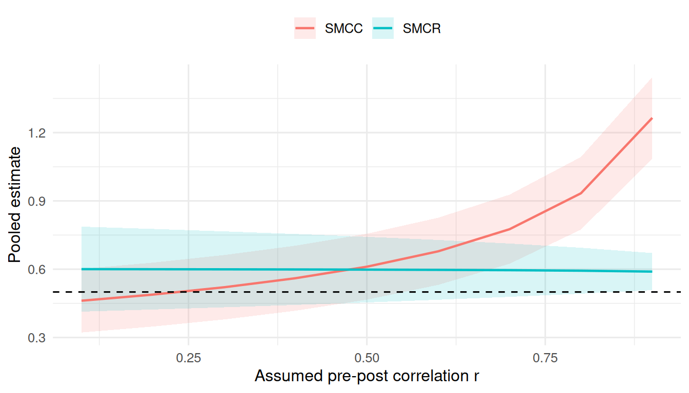

3 Effect Sizes
A meta-analysis can only combine what is commensurable. Primary studies report their results in many forms: means and standard deviations, \(t\) and \(F\) statistics, \(2 \times 2\) tables, correlation matrices, regression coefficients, medians with interquartile ranges, hazard ratios read from survival curves. Before any pooling model can be fitted, each result has to be expressed on a common scale, together with an estimate of its sampling variance. That common scale is the effect size, and the decisions made at this stage (which metric, which sign convention, which formula for the variance, how to handle a study that reports only a \(p\)-value) shape every downstream result. Errors made here cannot be repaired by a sophisticated model later: a random-effects model fitted to effect sizes with the wrong sign or the wrong variance is precisely wrong.
This chapter covers the effect size families that account for the bulk of applied meta-analyses in psychology, medicine, economics, management and marketing: mean differences for continuous outcomes, including pre-post designs, and ratios of standard deviations for questions about variability; odds ratios, risk ratios and risk differences for binary outcomes; correlation coefficients, including partial and semi-partial correlations from regression models; single proportions, incidence rates and hazard ratios. It then turns to the practical problem of extracting effect sizes from whatever a paper happens to report, to conversions between metrics, to cluster-randomized and crossover trials, and to the psychometric corrections for measurement error and range restriction associated with Hunter and Schmidt. Throughout, effect sizes are computed with metafor::escalc() (Viechtbauer 2010) on public datasets from the metadat package. How these effect sizes are then pooled is the subject of Chapter 4.
library(metafor) # loaded by _common.R as well; repeated for clarity
library(esc)
library(effectsize)
library(psychmeta)3.1 What an effect size is
An effect size is a quantitative index of the magnitude, and usually the direction, of a relationship or difference in a population. In meta-analysis we work with an estimate \(y_i\) of a study-specific parameter \(\theta_i\), computed from study \(i\)’s data, together with an estimate \(v_i\) of its sampling variance. The pair \((y_i, v_i)\) is the unit of analysis for nearly every model in this book. The pooling models in Chapter 4 treat \(v_i\) as known, so two properties of the metric matter a great deal: the sampling distribution of \(y_i\) should be close to normal, and \(v_i\) should be estimated accurately and should not depend strongly on \(y_i\) itself. Several transformations used below (the logarithm for ratios, Fisher’s \(z\) for correlations, the logit for proportions) exist precisely to achieve these two properties.
A useful effect size has three further properties. It should be comparable across studies that used different instruments or units. It should be interpretable, either in natural units (days of hospital stay, mmHg, percentage points) or by reference to a well-understood scale. And it should be computable from the information that studies actually report. These goals conflict. The raw mean difference is the most interpretable metric for a continuous outcome but is only comparable when every study used the same scale. The standardized mean difference is comparable across scales but its interpretation depends on the population standard deviation used as the yardstick.
3.1.1 Choosing a metric
The choice of metric should be made at the protocol stage (Chapter 2) and should follow from the research question and the design of the primary studies, not from which metric gives the most attractive result. A few principles cover most cases.
For continuous outcomes measured on the same scale in all studies (blood pressure in mmHg, length of stay in days, revenue in a common currency), the raw mean difference is preferable because it is directly interpretable and does not import between-study differences in sample variability into the effect size. When studies used different instruments for the same construct (different depression inventories, different job satisfaction scales), a standardized mean difference is needed. When the outcome is a ratio-scale quantity and effects are plausibly multiplicative (biomass, costs, reaction times), the log ratio of means is often the most natural metric.
For binary outcomes, the odds ratio has the best mathematical properties (it is symmetric in the definition of the event, unbounded on the log scale, and estimable from case-control designs), the risk ratio is easier to communicate, and the risk difference is the most directly relevant for decisions but is usually the least homogeneous across studies with different baseline risks (Higgins et al. 2019). For associations between two continuous variables the correlation coefficient is the default, typically analyzed on Fisher’s \(z\) scale. Proportions from single-arm studies and incidence rates from studies with person-time denominators have their own metrics, discussed below.
When different studies report different designs (some two-group comparisons, some correlations, some \(2 \times 2\) tables), choose the metric that most studies report naturally and convert the minority. Every conversion rests on assumptions, so record which studies were converted and examine whether they differ systematically from the rest (a moderator analysis or a sensitivity analysis; Chapters 5 and 8).
3.1.2 Direction and sign conventions
Every effect size needs an explicit sign convention, stated in the protocol and in the methods section. For two-group comparisons the usual convention is experimental (or exposed) minus control, so that a positive mean difference means a higher outcome in the experimental group. Whether a higher outcome is good depends on the outcome: a positive difference in depression scores is harmful, a positive difference in quality of life is beneficial. When a meta-analysis combines outcomes in which “higher” means different things, the effect sizes must be reflected so that a common direction (for example “positive = favours the intervention”) holds for all of them. In escalc() this can be done after computing effect sizes by multiplying yi by \(-1\) for the relevant rows; the variance is unchanged. For ratio measures the same reflection is achieved by inverting the ratio, which on the log scale is again a sign change.
Two errors are common in practice. The first is mixing conventions silently, for example taking some studies’ differences as treatment minus control and others’ as control minus treatment because that is how they were printed. The second is reflecting a scale but forgetting that the study’s own analysis used a change score, so that “improvement” is a negative number in some studies and a positive number in others. Both errors inflate heterogeneity and bias the pooled estimate toward zero. A simple safeguard is to tabulate, for each study, the group means (or event rates) alongside the computed effect size and check that the sign agrees with what the paper’s text says about which group did better.
3.2 Continuous outcomes from two independent groups
Let group 1 (experimental) have sample mean \(\bar X_1\), standard deviation \(S_1\) and size \(n_1\), and group 2 (control) have \(\bar X_2\), \(S_2\), \(n_2\). Four effect sizes are in common use.
3.2.1 Raw mean difference
The raw (unstandardized) mean difference is
\[ \text{MD} = \bar X_1 - \bar X_2, \qquad \widehat{\operatorname{Var}}(\text{MD}) = \frac{S_1^2}{n_1} + \frac{S_2^2}{n_2}. \]
The variance formula above does not assume equal population variances. If homoscedasticity is plausible one can instead use \(S_p^2 (1/n_1 + 1/n_2)\), with the pooled variance \(S_p^2 = [(n_1 - 1)S_1^2 + (n_2 - 1)S_2^2]/(n_1 + n_2 - 2)\); escalc() uses the heteroscedastic form by default (vtype = "LS") and the pooled form with vtype = "HO". The MD is approximately normal for moderate group sizes even when the raw data are not, by the central limit theorem.
3.2.2 Standardized mean difference: Cohen’s d and Hedges’ g
When studies measure the outcome on different scales, the mean difference is divided by a standard deviation. With the pooled within-group SD this gives
\[ d = \frac{\bar X_1 - \bar X_2}{S_p}. \]
The quantity \(d\) is commonly called Cohen’s \(d\), after Cohen (1988), who popularized benchmarks of 0.2, 0.5 and 0.8 for small, medium and large effects. Those benchmarks were offered as a fallback for when nothing better is known and are a poor substitute for substantive interpretation in a specific field.
Hedges (1981) showed that \(d\) is biased upward in small samples: \(E(d) \approx \delta / J(m)\), where \(\delta\) is the population SMD and \(m = n_1 + n_2 - 2\) the degrees of freedom. Multiplying by the exact correction factor
\[ J(m) = \frac{\Gamma(m/2)}{\sqrt{m/2}\; \Gamma\!\left((m-1)/2\right)} \]
yields the unbiased estimator \(g = J(m)\, d\), usually called Hedges’ \(g\). The widely used approximation \(J(m) \approx 1 - 3/(4m - 1)\) is accurate to three or four decimal places once \(m\) exceeds about 10. The large-sample sampling variance of \(g\) is
\[ \widehat{\operatorname{Var}}(g) = \frac{1}{n_1} + \frac{1}{n_2} + \frac{g^2}{2(n_1 + n_2)}. \]
The second term shows that the variance of an SMD depends on the effect size itself. This is a mild violation of the “known variance” assumption: studies with larger \(|g|\) receive slightly smaller weights than their sample sizes alone would imply. Variants of this formula exist (some use \(d\) instead of \(g\), or \(n_1 + n_2 - 2\) in the denominator); escalc() provides an unbiased variance estimator with vtype = "UB". The differences matter only for very small studies.
In escalc(), measure = "SMD" returns Hedges’ \(g\) with the exact correction.
3.2.3 Glass’s delta
If the intervention is expected to change the variability of the outcome as well as its mean, the pooled SD mixes a treatment effect into the denominator. Glass (1976) proposed standardizing by the control group SD only,
\[ \Delta = \frac{\bar X_1 - \bar X_2}{S_2}, \]
with a small-sample correction based on \(m = n_2 - 1\) degrees of freedom. Glass’s \(\Delta\) is less efficient than \(g\) because \(S_2\) is estimated from one group only, so it is best reserved for settings in which unequal variances are substantively expected. In escalc() it is measure = "SMD1", which divides by the SD of the second group.
3.2.4 Ratio of means
For outcomes measured on a ratio scale (strictly positive, with a meaningful zero), the log-transformed ratio of means, also called the log response ratio, is
\[ \text{lnROM} = \ln\!\left(\frac{\bar X_1}{\bar X_2}\right), \qquad \widehat{\operatorname{Var}}(\text{lnROM}) = \frac{S_1^2}{n_1 \bar X_1^2} + \frac{S_2^2}{n_2 \bar X_2^2} \]
(Hedges et al. 1999). Back-transformed, \(\exp(\text{lnROM})\) is the proportional change in the mean, which is often how clinicians and ecologists think about effects (“specialist care shortened stays by 30%”). The delta-method variance assumes that the means are well away from zero relative to their standard errors; Hedges et al. (1999) suggest checking that \(\bar X / (S/\sqrt{n})\) exceeds about 3 in each group.
3.2.5 Worked example: specialist stroke care
The dat.normand1999 dataset contains nine studies comparing the length of hospital stay (in days) of stroke patients under specialist care (group 1) and routine care (group 2) (Normand 1999). All studies measure the outcome in days, so the raw MD is available, but the example also computes the SMD and the log ROM for comparison.
dat <- dat.normand1999
md <- escalc(measure = "MD", m1i = m1i, sd1i = sd1i, n1i = n1i,
m2i = m2i, sd2i = sd2i, n2i = n2i, data = dat)
smd <- escalc(measure = "SMD", m1i = m1i, sd1i = sd1i, n1i = n1i,
m2i = m2i, sd2i = sd2i, n2i = n2i, data = dat)
rom <- escalc(measure = "ROM", m1i = m1i, sd1i = sd1i, n1i = n1i,
m2i = m2i, sd2i = sd2i, n2i = n2i, data = dat)
data.frame(source = dat$source, n1 = dat$n1i, n2 = dat$n2i,
MD = md$yi, var_MD = md$vi,
g = smd$yi, var_g = smd$vi,
lnROM = rom$yi, var_lnROM = rom$vi)
#> source n1 n2 MD var_MD g var_g lnROM var_lnROM
#> 1 Edinburgh 155 156 -20 40.508 -0.3552 0.01306 -0.31013 0.009379
#> 2 Orpington-Mild 31 32 -2 2.081 -0.3479 0.06447 -0.07067 0.002763
#> 3 Orpington-Moderate 75 71 -55 15.698 -2.3176 0.04581 -0.62019 0.001777
#> 4 Orpington-Severe 18 18 -71 150.222 -1.8880 0.16062 -0.73119 0.011921
#> 5 Montreal-Home 8 13 -4 17.308 -0.3840 0.20543 -0.24527 0.069544
#> 6 Montreal-Transfer 57 52 1 1.167 0.1721 0.03691 0.05478 0.003331
#> 7 Newcastle 34 33 11 94.589 0.2721 0.06027 0.23827 0.042865
#> 8 Umea 110 183 -10 6.311 -0.4246 0.01486 -0.38890 0.009423
#> 9 Uppsala 60 52 7 19.842 0.2896 0.03627 0.26518 0.028041All three metrics agree on the sign in every study: negative values mean shorter stays under specialist care. The magnitudes tell different stories, however. The Orpington-Mild study has a trivial raw difference of \(-2\) days but an SMD of \(-0.35\), because its SDs are small (7 and 4 days); the Edinburgh study has a ten times larger raw difference (\(-20\) days) and essentially the same SMD (\(-0.36\)), because its SDs are large. Whether these two studies show “the same” effect depends on whether one thinks in days or in standard deviation units. When all studies share a scale, the MD avoids letting differences in patient heterogeneity across sites masquerade as differences in effectiveness.
The exact and approximate correction factors are easy to check by hand for the first study:
with(dat[1, ], {
sp <- sqrt(((n1i - 1) * sd1i^2 + (n2i - 1) * sd2i^2) / (n1i + n2i - 2))
d <- (m1i - m2i) / sp
m <- n1i + n2i - 2
J_exact <- exp(lgamma(m / 2) - 0.5 * log(m / 2) - lgamma((m - 1) / 2))
J_approx <- 1 - 3 / (4 * m - 1)
c(d = d, J_exact = J_exact, J_approx = J_approx, g = J_exact * d,
var_g = 1 / n1i + 1 / n2i + (J_exact * d)^2 / (2 * (n1i + n2i)))
})
#> d J_exact J_approx g var_g
#> -0.35603 0.99757 0.99757 -0.35517 0.01306With 309 degrees of freedom the correction is negligible (\(J = 0.9976\) by both formulas) and \(g = -0.3552\) reproduces the escalc() output. For the Montreal-Home study (\(n_1 = 8\), \(n_2 = 13\)) the correction shrinks \(d\) by about 4%, which is why reporting \(g\) rather than \(d\) is the default for meta-analysis.
3.2.6 Effect sizes for variability
Every metric so far compares means. An intervention can also change how much outcomes vary between individuals: a treatment that helps some patients and harms others may leave the mean unchanged while inflating the spread, and a standardized protocol may make outcomes more uniform without shifting their average. Nakagawa et al. (2014) proposed two effect sizes for comparing the variability of two groups. The log variability ratio compares the standard deviations directly,
\[ \text{lnVR} = \ln\!\left(\frac{S_1}{S_2}\right) + \frac{1}{2(n_1 - 1)} - \frac{1}{2(n_2 - 1)}, \qquad \widehat{\operatorname{Var}}(\text{lnVR}) = \frac{1}{2(n_1 - 1)} + \frac{1}{2(n_2 - 1)}, \]
where the two correction terms remove the small-sample bias of \(\ln S\). Because the variance of \(\ln S\) depends only on the sample size, lnVR behaves much like Fisher’s \(z\): its sampling variance does not depend on the effect itself. For many biological and clinical outcomes, however, the SD grows with the mean (longer hospital stays are also more variable), so a treatment that lowers the mean will lower the SD as a side effect. The log coefficient of variation ratio adjusts for this by comparing \(\text{CV} = S/\bar X\) rather than \(S\),
\[ \text{lnCVR} = \ln\!\left(\frac{S_1/\bar X_1}{S_2/\bar X_2}\right) + \frac{1}{2(n_1 - 1)} - \frac{1}{2(n_2 - 1)} + \frac{S_2^2}{2 n_2 \bar X_2^2} - \frac{S_1^2}{2 n_1 \bar X_1^2}, \]
\[ \widehat{\operatorname{Var}}(\text{lnCVR}) = \frac{S_1^2}{n_1 \bar X_1^2} + \frac{1}{2(n_1 - 1)} + \frac{S_2^2}{n_2 \bar X_2^2} + \frac{1}{2(n_2 - 1)}, \]
which is the variance of lnVR plus the variance of the log ratio of means (Section 3.2.4). Like lnROM, lnCVR is only meaningful for ratio-scale outcomes. In escalc() the two measures are "VR" and "CVR". Nakagawa et al. (2014) also describe a more flexible alternative to lnCVR, in which the log SDs of all groups are modelled in a mixed model with the log means as a covariate; the location-scale models of Section 5.7 address a related question, whether between-study heterogeneity depends on moderators.
Does specialist stroke care make the length of stay more predictable as well as shorter? The Normand data give both ingredients:
nd <- dat.normand1999
vr <- escalc(measure = "VR", sd1i = sd1i, n1i = n1i, sd2i = sd2i, n2i = n2i,
data = nd, slab = source)
cvr <- escalc(measure = "CVR", m1i = m1i, sd1i = sd1i, n1i = n1i,
m2i = m2i, sd2i = sd2i, n2i = n2i, data = nd, slab = source)
data.frame(source = nd$source, lnROM = round(rom$yi, 3),
lnVR = round(vr$yi, 3), lnCVR = round(cvr$yi, 3))
#> source lnROM lnVR lnCVR
#> 1 Edinburgh -0.310 -0.309 0.001
#> 2 Orpington-Mild -0.071 0.560 0.631
#> 3 Orpington-Moderate -0.620 -0.534 0.086
#> 4 Orpington-Severe -0.731 -0.875 -0.144
#> 5 Montreal-Home -0.245 -0.289 -0.043
#> 6 Montreal-Transfer 0.055 0.559 0.504
#> 7 Newcastle 0.238 0.280 0.042
#> 8 Umea -0.389 -0.521 -0.133
#> 9 Uppsala 0.265 0.299 0.034
# the first study by hand
with(nd[1, ], c(
lnVR = log(sd1i / sd2i) + 1 / (2 * (n1i - 1)) - 1 / (2 * (n2i - 1)),
lnCVR = log((sd1i / m1i) / (sd2i / m2i)) + 1 / (2 * (n1i - 1)) -
1 / (2 * (n2i - 1)) + sd2i^2 / (2 * n2i * m2i^2) - sd1i^2 / (2 * n1i * m1i^2)))
#> lnVR lnCVR
#> -0.308715 0.001419
fits_var <- list(ROM = rma(yi, vi, data = rom), VR = rma(yi, vi, data = vr),
CVR = rma(yi, vi, data = cvr))
var_tab <- t(sapply(fits_var, function(f) {
p <- predict(f, transf = exp)
c(ratio = p$pred, ci.lb = p$ci.lb, ci.ub = p$ci.ub, tau2 = f$tau2)
}))
round(var_tab, 3)
#> ratio ci.lb ci.ub tau2
#> ROM 0.804 0.638 1.013 0.108
#> VR 0.919 0.652 1.295 0.246
#> CVR 1.136 0.937 1.378 0.049In the Edinburgh trial the specialist-care SD (47 days) is smaller than the routine-care SD (64 days), giving \(\text{lnVR} = -0.309\), but the mean is smaller in about the same proportion, so the coefficients of variation are almost identical and \(\text{lnCVR} = 0.001\). Pooled with random-effects models, the ratio of SDs is 0.92 (95% CI 0.65 to 1.30) and the ratio of CVs is 1.14 (0.94 to 1.38), so there is no clear evidence that specialist care changes the variability of stays, in absolute or in relative terms. The heterogeneity estimates are more revealing. The SD ratios vary a great deal between trials (\(\hat\tau^2 =\) 0.246), the CV ratios much less (0.049): trials in which specialist care shortened stays most also show the largest reductions in the SD, so most of the between-trial variation in lnVR simply tracks the variation in lnROM. Across the 18 study arms the correlation between the log SDs and the log means is 0.70. This mean-variance relationship is what makes lnCVR the more relevant of the two measures here; when it is present, an apparent effect on lnVR may be nothing more than an effect on the mean.
Variability ratios are sensitive to features of the data that do not affect mean differences: floor and ceiling effects compress SDs, outliers inflate them, and SDs imputed from ranges or medians (Section 3.8.3) carry extra error. Treat a variability meta-analysis as exploratory unless the SDs are reported directly and the outcome scale is free of bounds near the observed values.
3.3 Pre-post and change-score designs
Many studies measure the same participants before and after an intervention, sometimes without a control group. Let \(\bar X_{\text{pre}}\) and \(\bar X_{\text{post}}\) be the means at the two occasions, \(S_{\text{pre}}\) and \(S_{\text{post}}\) the SDs, \(n\) the number of participants and \(r\) the pre-post correlation. Two standardized mean changes are in use, and they estimate different parameters (Morris and DeShon 2002).
The standardized mean change using change-score standardization (SMCC) divides by the SD of the change scores,
\[ \text{SMCC} = J(n-1)\,\frac{\bar X_{\text{post}} - \bar X_{\text{pre}}}{S_D}, \qquad S_D = \sqrt{S_{\text{pre}}^2 + S_{\text{post}}^2 - 2 r S_{\text{pre}} S_{\text{post}}}, \]
with sampling variance approximately \(1/n + \text{SMCC}^2/(2n)\). The SMCC is the effect size that a paired \(t\) test sees: \(\text{SMCC} \approx t/\sqrt{n}\).
The standardized mean change using raw-score standardization (SMCR) divides by the pretest SD (Becker 1988),
\[ \text{SMCR} = J(n-1)\,\frac{\bar X_{\text{post}} - \bar X_{\text{pre}}}{S_{\text{pre}}}, \qquad \widehat{\operatorname{Var}}(\text{SMCR}) = \frac{2(1 - r)}{n} + \frac{\text{SMCR}^2}{2n}. \]
The SMCR is on the same metric as an independent-groups SMD: it expresses the change in units of the between-person SD of the outcome. If the two occasions have equal SDs, \(\text{SMCC} = \text{SMCR}/\sqrt{2(1-r)}\), so with \(r = 0.8\) the SMCC is about 1.6 times the SMCR. Mixing SMCC values from repeated-measures studies with SMD values from between-subjects studies therefore produces apples-and-oranges pooling; Morris and DeShon (2002) recommend converting everything to the raw-score metric when designs are mixed.
Note that \(r\) enters both metrics. For the SMCC it enters the point estimate; for the SMCR only the sampling variance. A higher pre-post correlation makes the SMCR more precise and the SMCC larger.
3.3.1 The missing pre-post correlation
Primary studies rarely report \(r\). It can sometimes be recovered: if the paper reports the SD of the change scores, \(r = (S_{\text{pre}}^2 + S_{\text{post}}^2 - S_D^2)/(2 S_{\text{pre}} S_{\text{post}})\); if it reports a paired \(t\) statistic, \(S_D = (\bar X_{\text{post}} - \bar X_{\text{pre}})\sqrt{n}/t\) and the same identity applies. Otherwise the value has to be imputed, for example from other studies in the review that report it, from test-retest reliabilities of the instrument over a comparable interval, or from external data. The Cochrane Handbook describes these imputation strategies and recommends a sensitivity analysis over a plausible range of values (Higgins et al. 2019).
The simulated example below generates six pre-post studies with known true correlations, computes both metrics with the observed correlations, and then recomputes the pooled estimates assuming a common \(r\) of 0.3, 0.5 or 0.7.
set.seed(2026)
sim_prepost <- function(n, rho, delta = 0.5, sd = 10) {
pre <- rnorm(n, 50, sd)
post <- 50 + delta * sd + rho * (pre - 50) + sqrt(1 - rho^2) * rnorm(n, 0, sd)
c(m_pre = mean(pre), m_post = mean(post), sd_pre = sd(pre),
sd_post = sd(post), ri = cor(pre, post))
}
pp <- data.frame(study = 1:6, ni = c(24, 40, 18, 60, 32, 45),
rho = c(0.5, 0.7, 0.6, 0.8, 0.4, 0.65))
pp <- cbind(pp, round(t(mapply(sim_prepost, pp$ni, pp$rho)), 2))
pp
#> study ni rho m_pre m_post sd_pre sd_post ri
#> 1 1 24 0.50 46.55 55.53 9.80 7.36 0.21
#> 2 2 40 0.70 48.22 53.74 9.22 11.64 0.69
#> 3 3 18 0.60 53.33 58.24 9.12 6.91 0.49
#> 4 4 60 0.80 50.54 56.18 9.74 8.32 0.81
#> 5 5 32 0.40 49.44 56.07 10.31 9.05 0.38
#> 6 6 45 0.65 48.35 54.30 11.02 10.97 0.67
smcr <- escalc(measure = "SMCR", m1i = m_post, m2i = m_pre, sd1i = sd_pre,
ni = ni, ri = ri, data = pp)
smcc <- escalc(measure = "SMCC", m1i = m_post, m2i = m_pre, sd1i = sd_post,
sd2i = sd_pre, ni = ni, ri = ri, data = pp)
cbind(study = pp$study, ri = pp$ri, SMCR = round(smcr$yi, 3),
SMCC = round(smcc$yi, 3))
#> study ri SMCR SMCC
#> [1,] 1 0.21 0.886 0.793
#> [2,] 2 0.69 0.587 0.636
#> [3,] 3 0.49 0.514 0.564
#> [4,] 4 0.81 0.572 0.972
#> [5,] 5 0.38 0.627 0.597
#> [6,] 6 0.67 0.531 0.655The true raw-score standardized change is \(\delta = 0.5\) in every study, and the SMCR values scatter around it (from 0.51 to 0.89 in these small samples). The SMCC values tend to exceed the SMCR values when the observed correlation is above 0.5 and to fall below them when it is lower, as the identity above predicts. The largest discrepancy is in study 4, with \(r = 0.81\), where the SMCC of 0.97 is 1.7 times the SMCR of 0.57. (In escalc(), the sd1i argument supplies the standardizer for SMCR; passing the pretest SD while m1i is the posttest mean gives the Becker metric with a positive sign for improvement.)
r_grid <- round(seq(0.1, 0.9, by = 0.1), 1)
sens <- do.call(rbind, lapply(r_grid, function(r) {
a <- escalc(measure = "SMCR", m1i = m_post, m2i = m_pre, sd1i = sd_pre,
ni = ni, ri = rep(r, 6), data = pp)
b <- escalc(measure = "SMCC", m1i = m_post, m2i = m_pre, sd1i = sd_post,
sd2i = sd_pre, ni = ni, ri = rep(r, 6), data = pp)
fa <- rma(yi, vi, data = a); fb <- rma(yi, vi, data = b)
data.frame(r = r, metric = c("SMCR", "SMCC"),
est = c(coef(fa), coef(fb)),
lb = c(fa$ci.lb, fb$ci.lb), ub = c(fa$ci.ub, fb$ci.ub))
}))
subset(sens, r %in% c(0.3, 0.5, 0.7))
#> r metric est lb ub
#> 5 0.3 SMCR 0.5995 0.4328 0.7662
#> 6 0.3 SMCC 0.5208 0.3793 0.6623
#> 9 0.5 SMCR 0.5982 0.4541 0.7423
#> 10 0.5 SMCC 0.6111 0.4663 0.7559
#> 13 0.7 SMCR 0.5957 0.4786 0.7128
#> 14 0.7 SMCC 0.7758 0.6241 0.9275
ggplot(sens, aes(r, est, colour = metric, fill = metric)) +
geom_ribbon(aes(ymin = lb, ymax = ub), alpha = 0.15, colour = NA) +
geom_line(linewidth = 0.8) +
geom_hline(yintercept = 0.5, linetype = "dashed") +
labs(x = "Assumed pre-post correlation r", y = "Pooled estimate",
colour = NULL, fill = NULL) +
theme(legend.position = "top")
Figure 3.1: Pooled standardized mean change (with 95% CI) as a function of the assumed pre-post correlation, for raw-score (SMCR) and change-score (SMCC) standardization. Six simulated studies with a true raw-score effect of 0.5 (dashed line).
Figure 3.1 makes the practical lesson visible. The pooled SMCR is essentially flat in the assumed \(r\) (only the weights and the width of the interval change), while the pooled SMCC rises steeply, from 0.52 at \(r = 0.3\) to 0.78 at \(r = 0.7\). When \(r\) must be imputed, the raw-score metric is far more robust to the imputation.
3.3.2 Designs with a control group
When both an intervention and a control group are measured before and after, the effect of interest is the difference in change. A simple and widely used approach computes the SMCR within each group and takes the difference, with the variance equal to the sum of the two within-group variances (the groups are independent). Morris (2007) compared several estimators for this pretest-posttest-control design and recommended standardizing the difference in mean changes by the pooled pretest SD, with a small-sample correction; this estimator is unbiased and has a known variance that again depends on the pre-post correlation. Both approaches yield values on the same metric as a posttest-only SMD, which allows combining randomized trials with and without baseline measurements.
3.4 Binary outcomes
Consider a \(2 \times 2\) table with \(a\) events and \(b\) non-events among \(n_1 = a + b\) treated participants, and \(c\) events and \(d\) non-events among \(n_2 = c + d\) controls. Write \(p_1 = a/n_1\) and \(p_2 = c/n_2\).
The log odds ratio and its large-sample (Woolf) variance are
\[ \ln \text{OR} = \ln\!\left(\frac{a d}{b c}\right), \qquad \widehat{\operatorname{Var}}(\ln \text{OR}) = \frac{1}{a} + \frac{1}{b} + \frac{1}{c} + \frac{1}{d}. \]
The log risk ratio and its variance are
\[ \ln \text{RR} = \ln\!\left(\frac{p_1}{p_2}\right), \qquad \widehat{\operatorname{Var}}(\ln \text{RR}) = \frac{1}{a} - \frac{1}{n_1} + \frac{1}{c} - \frac{1}{n_2}, \]
and the risk difference and its variance are
\[ \text{RD} = p_1 - p_2, \qquad \widehat{\operatorname{Var}}(\text{RD}) = \frac{p_1(1 - p_1)}{n_1} + \frac{p_2(1 - p_2)}{n_2}. \]
Ratio measures are always analyzed on the log scale, where their sampling distributions are closer to normal and where a ratio and its reciprocal are symmetric around zero. Results are back-transformed for reporting.
The BCG vaccine trials (dat.bcg) record tuberculosis cases among vaccinated and unvaccinated participants (Colditz et al. 1994). The three binary metrics for the first five trials are:
bcg <- dat.bcg
lor <- escalc(measure = "OR", ai = tpos, bi = tneg, ci = cpos, di = cneg, data = bcg)
lrr <- escalc(measure = "RR", ai = tpos, bi = tneg, ci = cpos, di = cneg, data = bcg)
rd <- escalc(measure = "RD", ai = tpos, bi = tneg, ci = cpos, di = cneg, data = bcg)
head(data.frame(trial = paste(bcg$author, bcg$year),
p_vacc = round(bcg$tpos / (bcg$tpos + bcg$tneg), 4),
p_ctrl = round(bcg$cpos / (bcg$cpos + bcg$cneg), 4),
lnOR = lor$yi, lnRR = lrr$yi, RD = rd$yi), 5)
#> trial p_vacc p_ctrl lnOR lnRR RD
#> 1 Aronson 1948 0.0325 0.0791 -0.9387 -0.8893 -0.046616
#> 2 Ferguson & Simes 1949 0.0196 0.0957 -1.6662 -1.5854 -0.076102
#> 3 Rosenthal et al 1960 0.0130 0.0500 -1.3863 -1.3481 -0.037013
#> 4 Hart & Sutherland 1977 0.0046 0.0193 -1.4564 -1.4416 -0.014715
#> 5 Frimodt-Moller et al 1973 0.0065 0.0081 -0.2191 -0.2175 -0.001582Because tuberculosis was rare in these cohorts (the control risks are all below 10%), the log odds ratios and log risk ratios are nearly identical: in the Hart & Sutherland trial, \(\ln\text{OR} = -1.456\) and \(\ln\text{RR} = -1.442\). The risk differences, by contrast, are tiny in absolute terms (\(-0.015\) for the same trial) and vary mainly with the baseline risk. This illustrates the general pattern: relative measures tend to be more stable across populations with different baseline risks, absolute measures are what matter for a decision in a specific population. A common reporting strategy pools on a relative scale and then converts the pooled ratio to an absolute effect at one or more assumed baseline risks (Higgins et al. 2019).
3.4.1 Zero cells and continuity corrections
If any cell of the table is zero, \(\ln \text{OR}\) and its variance are undefined. The traditional remedy adds a constant, usually 0.5, to every cell of tables with a zero; this is what escalc() does by default (add = 1/2, to = "only0"). Tables in which both arms have zero events (double-zero studies) are kept with the correction unless drop00 = TRUE. The correction is a pragmatic fix, not a principled one. J. Sweeting et al. (2004) showed that the constant 0.5 can bias pooled odds ratios considerably, particularly when group sizes are unbalanced, and proposed alternatives such as treatment-arm continuity corrections. For sparse data the better solution is to avoid the correction altogether by using methods that work with the \(2 \times 2\) counts directly: the Mantel-Haenszel and Peto methods, or generalized linear mixed models (GLMMs) that model the event counts as binomial (Stijnen et al. 2010; Bradburn et al. 2006). These are covered in Chapter 4, which also compares them on a rare-event dataset.
3.5 Correlations
For two continuous variables measured on the same \(n\) participants, the Pearson correlation \(r\) is the natural effect size. Its large-sample variance is
\[ \widehat{\operatorname{Var}}(r) = \frac{(1 - r^2)^2}{n - 1}, \]
which depends strongly on \(r\): correlations near \(\pm 1\) are estimated much more precisely than correlations near zero. The sampling distribution of \(r\) is also skewed when \(|\rho|\) is large. Both problems are addressed by Fisher’s variance-stabilizing transformation,
\[ z = \tfrac{1}{2} \ln\!\left(\frac{1 + r}{1 - r}\right) = \operatorname{artanh}(r), \qquad \widehat{\operatorname{Var}}(z) = \frac{1}{n - 3}, \]
whose sampling distribution is close to normal and whose variance depends only on the sample size. Pooled estimates and confidence limits are computed on the \(z\) scale and back-transformed with \(r = \tanh(z)\).
The sample correlation is also slightly biased toward zero. Olkin and Pratt (1958) derived the unbiased estimator, closely approximated by
\[ r_u \approx r \left[ 1 + \frac{1 - r^2}{2(n - 3)} \right], \]
which escalc() computes (with the exact hypergeometric form) as measure = "UCOR". The bias is of order \(1/n\) and is negligible for the sample sizes typical in correlational research, but it can matter when many small studies are combined.
The dat.molloy2014 dataset contains 16 studies of the correlation between conscientiousness and medication adherence (Molloy et al. 2013).
mol <- dat.molloy2014
zc <- escalc(measure = "ZCOR", ri = ri, ni = ni, data = mol)
uc <- escalc(measure = "UCOR", ri = ri, ni = ni, data = mol)
head(data.frame(study = paste(mol$authors, mol$year), n = mol$ni, r = mol$ri,
r_unbiased = round(uc$yi, 4), z = round(zc$yi, 4),
var_z = round(zc$vi, 5)), 5)
#> study n r r_unbiased z var_z
#> 1 Axelsson et al. 2009 109 0.187 0.1879 0.1892 0.00943
#> 2 Axelsson et al. 2011 749 0.162 0.1621 0.1634 0.00134
#> 3 Bruce et al. 2010 55 0.340 0.3429 0.3541 0.01923
#> 4 Christensen et al. 1999 107 0.320 0.3214 0.3316 0.00962
#> 5 Christensen & Smith 1995 72 0.270 0.2718 0.2769 0.01449
res_z <- rma(yi, vi, data = zc)
res_z
#>
#> Random-Effects Model (k = 16; tau^2 estimator: REML)
#>
#> tau^2 (estimated amount of total heterogeneity): 0.0081 (SE = 0.0055)
#> tau (square root of estimated tau^2 value): 0.0901
#> I^2 (total heterogeneity / total variability): 61.73%
#> H^2 (total variability / sampling variability): 2.61
#>
#> Test for Heterogeneity:
#> Q(df = 15) = 38.1595, p-val = 0.0009
#>
#> Model Results:
#>
#> estimate se zval pval ci.lb ci.ub
#> 0.1499 0.0316 4.7501 <.0001 0.0881 0.2118 ***
#>
#> ---
#> Signif. codes: 0 '***' 0.001 '**' 0.01 '*' 0.05 '.' 0.1 ' ' 1
predict(res_z, transf = transf.ztor)
#>
#> pred ci.lb ci.ub pi.lb pi.ub
#> 0.1488 0.0878 0.2087 -0.0371 0.3248
# for comparison: untransformed r with inverse-variance weights,
# and the sample-size weighted mean of r (Hunter-Schmidt bare-bones)
res_r <- rma(measure = "COR", ri = ri, ni = ni, data = mol)
c(z_based = transf.ztor(coef(res_z)), r_based = coef(res_r),
n_weighted = weighted.mean(mol$ri, mol$ni))
#> z_based.intrcpt r_based.intrcpt n_weighted
#> 0.1488 0.1524 0.1235On the \(z\) scale the REML estimate is 0.1499, which back-transforms to a mean correlation of 0.149 (95% CI 0.088 to 0.209). The prediction interval, \(-0.037\) to 0.325, shows that in some settings the association may be essentially absent. Note that predict() back-transforms each quantity separately; \(\tanh\) of the mean \(z\) is not the mean of the correlation distribution but approximately its median, a point we return to under psychometric meta-analysis below.
Why not pool \(r\) directly? Pooling raw correlations with inverse-variance weights \(1/\widehat{\operatorname{Var}}(r)\) gives more weight to studies with larger \(|r|\), because their estimated variances are smaller, which introduces a correlation between effect sizes and weights. Pooling on \(z\) avoids that, and its confidence intervals have better coverage. The Hunter-Schmidt tradition pools \(r\) with sample-size weights instead, which avoids the dependence of weights on \(r\) by construction; we discuss this choice in Section 3.12.
3.5.1 Partial and semi-partial correlations
In economics, management and the social sciences, the association of interest is often reported only as a coefficient in a multiple regression. A coefficient’s \(t\) statistic can be converted to a partial correlation,
\[ r_p = \frac{t}{\sqrt{t^2 + \nu}}, \qquad \nu = n - p - 1, \qquad \widehat{\operatorname{Var}}(r_p) = \frac{(1 - r_p^2)^2}{\nu}, \]
where \(p\) is the number of predictors in the model, and, if the model’s \(R^2\) is reported, to a semi-partial correlation \(r_{sp} = t \sqrt{1 - R^2} / \sqrt{\nu}\) with the sampling variance given by Aloe and Becker (2012). The partial correlation measures the association between \(X\) and \(Y\) after removing the other predictors from both; the semi-partial correlation removes them from \(X\) only and is on the same metric as the zero-order correlation with \(Y\) in its original variance. Neither is directly comparable to a zero-order correlation, and both depend on which covariates were included, which typically varies from study to study. Meta-analyses of partial correlations should therefore code the covariate set and examine it as a moderator.
The dat.aloe2013 data contain \(t\) statistics for the association between perceived supervision quality and work outcomes from five regression models:
al <- dat.aloe2013
pcor <- escalc(measure = "PCOR", ti = tval, ni = n, mi = preds, data = al)
spc <- escalc(measure = "SPCOR", ti = tval, ni = n, mi = preds, r2i = R2, data = al)
data.frame(al, pcor = round(pcor$yi, 4), spcor = round(spc$yi, 4),
var_spcor = round(spc$vi, 5))
#> study n tval preds R2 pcor spcor var_spcor
#> 1 Abu-Bader (2000) 218 4.61 4 0.240 0.3012 0.2754 0.00328
#> 2 Cole et al. (2004) 232 6.19 7 0.455 0.3822 0.3053 0.00228
#> 3 Wallach & Mueller (2006) 156 4.07 6 0.500 0.3163 0.2358 0.00319
#> 4 Weaver et al. (2007) 382 -0.77 19 0.327 -0.0404 -0.0332 0.00176
#> 5 Acker (2004) 259 1.16 15 0.117 0.0742 0.0699 0.00339For the first study, \(t = 4.61\) with \(\nu = 218 - 4 - 1 = 213\) gives \(r_p = 4.61/\sqrt{4.61^2 + 213} = 0.301\); the semi-partial correlation, \(0.275\), is smaller because it scales by \(\sqrt{1 - R^2} = \sqrt{0.76}\).
3.6 Proportions and rates
3.6.1 Single proportions
Prevalence studies and single-arm trials report \(x_i\) events out of \(n_i\) participants. The raw proportion \(p_i = x_i / n_i\) has variance \(p_i(1 - p_i)/n_i\), which shrinks to zero as \(p_i\) approaches 0 or 1 and so gives extreme studies extreme weights. Three transformations are used:
\[ \begin{aligned} \text{logit:} &\quad \ln\!\left(\frac{x}{n - x}\right), & \widehat{\operatorname{Var}} &= \frac{1}{x} + \frac{1}{n - x},\\ \text{arcsine:} &\quad \arcsin\sqrt{x/n}, & \widehat{\operatorname{Var}} &= \frac{1}{4n},\\ \text{Freeman-Tukey:} &\quad \tfrac12\left[\arcsin\sqrt{\tfrac{x}{n+1}} + \arcsin\sqrt{\tfrac{x+1}{n+1}}\right], & \widehat{\operatorname{Var}} &= \frac{1}{4n + 2}. \end{aligned} \]
The logit is the canonical link for binomial data and back-transforms cleanly, but it needs a continuity correction when \(x = 0\) or \(x = n\). The arcsine and the Freeman-Tukey double-arcsine transformation (Freeman and Tukey 1950) stabilize the variance and handle 0 and \(n\) without correction. The Freeman-Tukey transformation, however, has no simple inverse: the back-transformation needs a sample size, and for a pooled estimate there is no single \(n\). Common choices (the harmonic mean of the \(n_i\), as in transf.ipft.hm) can produce misleading back-transformed estimates when sample sizes vary widely (Schwarzer et al. 2019); Doi and Xu (2021) dispute how often this matters in practice. The escalc() documentation in metafor now advises against using the double-arcsine transformation for meta-analysis. The more principled alternative is a binomial GLMM (a random-effects logistic regression), which models the counts directly and needs neither a transformation of \(p_i\) nor a continuity correction (Stijnen et al. 2010; Lin and Chu 2020).
The dat.pritz1997 dataset contains 14 single-arm studies of hyperdynamic therapy for cerebral vasospasm, with the number of patients who improved:
pr <- dat.pritz1997
plo <- escalc(measure = "PLO", xi = xi, ni = ni, data = pr)
pft <- escalc(measure = "PFT", xi = xi, ni = ni, data = pr)
pas <- escalc(measure = "PAS", xi = xi, ni = ni, data = pr)
fit_plo <- rma(yi, vi, data = plo)
fit_pft <- rma(yi, vi, data = pft)
fit_pas <- rma(yi, vi, data = pas)
fit_glmm <- rma.glmm(measure = "PLO", xi = xi, ni = ni, data = pr)
preds <- list(
"logit, normal-normal" = predict(fit_plo, transf = transf.ilogit),
"Freeman-Tukey (hm)" = predict(fit_pft, transf = transf.ipft.hm,
targs = list(ni = pr$ni)),
"arcsine" = predict(fit_pas, transf = transf.iarcsin),
"binomial GLMM (logit)" = predict(fit_glmm, transf = transf.ilogit))
props <- t(sapply(preds, function(p)
unlist(as.data.frame(p)[1, c("pred", "ci.lb", "ci.ub", "pi.lb", "pi.ub")])))
round(props, 3)
#> pred ci.lb ci.ub pi.lb pi.ub
#> logit, normal-normal 0.757 0.661 0.834 0.466 0.918
#> Freeman-Tukey (hm) 0.803 0.702 0.889 0.465 0.999
#> arcsine 0.813 0.704 0.902 0.414 0.999
#> binomial GLMM (logit) 0.798 0.692 0.875 0.443 0.952The four analyses of the same 14 studies give pooled success rates between 0.76 and 0.81. The normal-normal logit model is the lowest, partly because two studies (Tanabe et al., 10 of 10 improved, and Hadeishi et al., 12 of 12) need a continuity correction on the logit scale; the binomial GLMM uses their counts as is and estimates 0.80 (95% CI 0.69 to 0.87). The Freeman-Tukey and arcsine prediction intervals extend to 0.999, an artifact of back-transforming a symmetric interval through a bounded function. For new analyses of proportions, the binomial GLMM is the recommended default.
3.6.2 Incidence rates and rate ratios
When outcomes are counts of events accumulated over person-time \(t\) (strokes per patient-year, infections per catheter-day), the natural effect size for a two-group comparison is the log incidence rate ratio,
\[ \ln \text{IRR} = \ln\!\left(\frac{x_1 / t_1}{x_2 / t_2}\right), \qquad \widehat{\operatorname{Var}}(\ln \text{IRR}) = \frac{1}{x_1} + \frac{1}{x_2}, \]
which assumes that events follow a Poisson process within each group. The dat.hart1999 dataset contains six trials of warfarin for stroke prevention in atrial fibrillation, with person-years of follow-up:
hart <- dat.hart1999
irr <- escalc(measure = "IRR", x1i = x1i, t1i = t1i, x2i = x2i, t2i = t2i,
data = hart, slab = study)
irr[, c("study", "x1i", "t1i", "x2i", "t2i", "yi", "vi")]
#>
#> study x1i t1i x2i t2i yi vi
#> 1 AFASAK 9 413 19 398 -0.7842 0.1637
#> 2 SPAF 8 263 19 245 -0.9359 0.1776
#> 3 BAATAF 3 487 13 435 -1.5793 0.4103
#> 4 CAFA 6 237 9 241 -0.3887 0.2778
#> 5 SPINAF 7 489 23 483 -1.2019 0.1863
#> 6 EAFT 20 507 50 405 -1.1409 0.0700
fit_irr <- rma(yi, vi, data = irr)
predict(fit_irr, transf = exp)
#>
#> pred ci.lb ci.ub pi.lb pi.ub
#> 0.3617 0.2626 0.4984 0.2626 0.4984The pooled rate ratio of 0.36 means that the stroke rate under warfarin is about a third of the control rate. Using person-time instead of the number randomized matters when follow-up differs between arms or trials; when events are rare, the Poisson GLMM in rma.glmm(measure = "IRR") again avoids continuity corrections.
3.7 Time-to-event outcomes
For outcomes such as death, relapse or failure of a device, the timing of events matters as well as their occurrence, and participants are censored at different follow-up times. Neither the proportion with an event nor an incidence rate handles this properly unless hazards are constant. The appropriate effect size is the log hazard ratio, \(\ln \text{HR}\), which under proportional hazards summarizes the treatment effect over the whole follow-up period (Parmar et al. 1998). Two quantities link most of the ways a trial reports its survival analysis. For the logrank test, \(O - E\) is the observed minus the expected number of events in the research arm, and \(V\) is the hypergeometric variance of \(O - E\). The one-step (Peto) estimate of the log hazard ratio and its variance are then
\[ \ln \widehat{\text{HR}} = \frac{O - E}{V}, \qquad \widehat{\operatorname{Var}}(\ln \widehat{\text{HR}}) = \frac{1}{V}, \]
the time-to-event analogue of the Peto odds ratio (Section 4.9.1). When a trial reports \(O - E\) and \(V\), or the logrank statistic and one of them, the log hazard ratio follows directly; individual participant data meta-analyses of survival outcomes are typically carried out on exactly these quantities. Published reports more often give something else, and Parmar et al. (1998) and Tierney et al. (2007) describe how to recover \(\ln \text{HR}\) and \(V\) from it. A hazard ratio with a 95% CI (usually from a Cox model) is handled as in Section 3.8.2: \(\ln \text{HR}\) is the log of the point estimate, \(\widehat{SE} = [\ln(\text{UL}) - \ln(\text{LL})]/(2 \times 1.96)\), and \(V = 1/\widehat{SE}^2\). An exact two-sided logrank \(p\)-value can be combined with the total number of events \(D\): with allocation ratio \(R = n_1/n_2\), the variance is approximately \(V = D R/(1 + R)^2\) (\(D/4\) under equal allocation), \(O - E = \pm \sqrt{V}\, \Phi^{-1}(1 - p/2)\) with the sign taken from the direction of effect reported in the text, and so \(\ln \text{HR} = \pm \Phi^{-1}(1 - p/2)/\sqrt{V}\). The numbers of events alone still supply the variance through \(V \approx D/4\), but a point estimate then needs further information.
When only Kaplan-Meier curves are published, Parmar et al. (1998) proposed estimating \(O - E\) and \(V\) interval by interval from the curves and the numbers at risk; a widely used alternative digitizes the curves and reconstructs approximate individual participant data with the algorithm of Guyot et al. (2012), from which a Cox model can be fitted. Its accuracy for hazard ratios depends heavily on whether the numbers at risk or the total number of events are reported. Tierney et al. (2025) update the original guidance with further scenarios and a calculation spreadsheet.
The three routes can be checked against each other on a simulated trial in which the full data are available. The survival package, which ships with R, provides the Cox model and the logrank test:
library(survival)
set.seed(17)
n_arm <- 150
arm <- rep(0:1, each = n_arm) # 1 = research arm
t_event <- rexp(2 * n_arm, rate = 0.10 * ifelse(arm == 1, 0.7, 1))
t_cens <- runif(2 * n_arm, 2, 15)
time <- pmin(t_event, t_cens)
status <- as.integer(t_event <= t_cens)
cox <- coxph(Surv(time, status) ~ arm)
lr <- survdiff(Surv(time, status) ~ arm)
hr_ci <- exp(confint(cox))
O_E <- lr$obs[2] - lr$exp[2]
V_lr <- lr$var[2, 2]
p_lr <- pchisq(lr$chisq, df = 1, lower.tail = FALSE)
D <- sum(status)
V_p <- D / 4 # equal allocation
rbind(cox_hr_ci = c(lnHR = coef(cox)[[1]],
se = (log(hr_ci[2]) - log(hr_ci[1])) / (2 * qnorm(0.975))),
logrank_OE_V = c(O_E / V_lr, 1 / sqrt(V_lr)),
p_and_events = c(-qnorm(1 - p_lr / 2) / sqrt(V_p), 1 / sqrt(V_p)))
#> lnHR se
#> cox_hr_ci -0.1738 0.1623
#> logrank_OE_V -0.1737 0.1621
#> p_and_events -0.1733 0.1617The simulated trial has 153 events and a true hazard ratio of 0.7; the observed hazard ratio is 0.84 (logrank \(p\) = 0.28). All three routes give a log hazard ratio of about \(-0.17\) with a standard error of about 0.16. The agreement is close because the trial is balanced, the effect is modest and censoring is similar in the two arms, which are the conditions under which \(V \approx D/4\) and the one-step estimate are accurate. With large effects or unbalanced allocation the \(O - E\) approximation becomes biased, as the Peto odds ratio does (Bradburn et al. 2006), and a reported Cox estimate should be preferred.
In a review, different trials typically report different statistics, and each has to be converted by the route its report allows. The five hypothetical trials below report, respectively, a hazard ratio with its CI, \(O - E\) and \(V\), a logrank \(p\)-value with the number of events (1:1 allocation), another hazard ratio with CI, and a \(p\)-value from a trial with 2:1 allocation; in the two trials reporting only \(p\)-values the text says that the research arm did better.
tte <- data.frame(trial = c("A", "B", "C", "D", "E"),
hr = c(0.78, NA, NA, 0.91, NA),
lb = c(0.62, NA, NA, 0.70, NA), ub = c(0.98, NA, NA, 1.18, NA),
O_E = c(NA, -9.4, NA, NA, NA), V = c(NA, 31.2, NA, NA, NA),
p = c(NA, NA, 0.04, NA, 0.31), events = c(NA, NA, 120, NA, 85),
ratio = c(NA, NA, 1, NA, 2), sign = c(NA, NA, -1, NA, -1))
tte <- within(tte, {
V_hat <- ifelse(!is.na(hr), ((log(ub) - log(lb)) / (2 * qnorm(0.975)))^-2,
ifelse(!is.na(V), V, events * ratio / (1 + ratio)^2))
yi <- ifelse(!is.na(hr), log(hr),
ifelse(!is.na(O_E), O_E / V_hat, sign * qnorm(1 - p / 2) / sqrt(V_hat)))
vi <- 1 / V_hat
})
tte[, c("trial", "yi", "vi")]
#> trial yi vi
#> 1 A -0.24846 0.01364
#> 2 B -0.30128 0.03205
#> 3 C -0.37496 0.03333
#> 4 D -0.09431 0.01775
#> 5 E -0.23359 0.05294
fit_tte <- rma(yi, vi, data = tte, slab = trial)
predict(fit_tte, transf = exp)
#>
#> pred ci.lb ci.ub pi.lb pi.ub
#> 0.7932 0.6928 0.9082 0.6928 0.9082For trial C, \(V = 120/4 = 30\) and \(\Phi^{-1}(0.98) = 2.054\), so \(\ln \text{HR} = -2.054/\sqrt{30} = -0.375\); for trial E the 2:1 allocation reduces \(V\) to \(85 \times 2/9 = 18.9\). The pooled hazard ratio is 0.79 (95% CI 0.69 to 0.91). Two cautions apply. A \(p\)-value reported as “\(p < 0.05\)” or “not significant” cannot be converted this way. And all of these quantities assume proportional hazards; if the survival curves cross or the effect clearly changes over time, a single hazard ratio is a poor summary, and alternatives such as the difference in restricted mean survival time, or a meta-analysis of survival probabilities at fixed time points, may be more meaningful.
3.8 Computing effect sizes from reported statistics
Papers do not always report the summary statistics that the formulas above need. A substantial part of data extraction consists of recovering an effect size and its variance from whatever is reported. Each recovery step should be documented in the extraction sheet, along with the exact numbers and page used.
3.8.1 Test statistics and p-values
For a two-group comparison with an independent-samples \(t\) statistic,
\[ d = t \sqrt{\frac{1}{n_1} + \frac{1}{n_2}}, \]
and the small-sample correction and variance formula for \(g\) apply as before. An \(F\) statistic from a one-way ANOVA with two groups (one numerator degree of freedom) satisfies \(t = \sqrt{F}\), with the sign taken from the direction of the mean difference reported in the text; \(F\) statistics with more than one numerator degree of freedom cannot be converted to a single two-group contrast without additional information. A \(\chi^2\) statistic with one degree of freedom from a \(2 \times 2\) table gives the phi coefficient \(\phi = \sqrt{\chi^2/N}\), which can be converted to \(d\) (see Section 3.9). An exact two-sided \(p\)-value can be converted back to \(|t|\) with the quantile function, for example qt(1 - p/2, df = n1 + n2 - 2). Statements such as “\(p < .05\)” only give a bound; using the bound as if it were the exact value biases the effect size toward zero, and such studies are better flagged for sensitivity analysis.
escalc() accepts \(t\) statistics directly through the ti argument for SMDs, correlations and partial correlations:
escalc(measure = "SMD", ti = 2.10, n1i = 30, n2i = 32)
#>
#> yi vi
#> 1 0.5270 0.0668
c(d_from_t = 2.10 * sqrt(1 / 30 + 1 / 32),
t_from_p = qt(1 - 0.04 / 2, df = 30 + 32 - 2))
#> d_from_t t_from_p
#> 0.5337 2.0994The unstandardized \(d = 0.534\) becomes \(g = 0.527\) after the small-sample correction. The second line shows that an exact \(p = .04\) with 60 degrees of freedom corresponds to \(|t| = 2.10\), so the two routes agree.
3.8.2 Confidence intervals to standard errors
Many papers, especially in medicine, report a point estimate with a 95% confidence interval rather than a standard error. For a ratio measure the interval is symmetric on the log scale, so
\[ \widehat{SE} = \frac{\ln(\text{UL}) - \ln(\text{LL})}{2 \times 1.96}. \]
metafor::conv.wald() does this conversion (and also accepts a test statistic or \(p\)-value), and with check = TRUE (the default) it warns when the interval is noticeably asymmetric on the transformed scale, which usually signals a transcription error or an interval that was not computed by the Wald method.
ors <- data.frame(study = 1:3, or = c(1.85, 0.72, 2.40),
lb = c(1.10, 0.51, 1.05), ub = c(3.11, 1.02, 5.49))
conv.wald(out = or, ci.lb = lb, ci.ub = ub, data = ors, transf = log)
#>
#> study or lb ub yi vi
#> 1 1 1.85 1.10 3.11 0.6152 0.0703
#> 2 2 0.72 0.51 1.02 -0.3285 0.0313
#> 3 3 2.40 1.05 5.49 0.8755 0.1781For the first study, \(\ln(1.85) = 0.615\) and \(\widehat{SE} = [\ln(3.11) - \ln(1.10)]/3.92 = 0.265\), so \(v = 0.070\). Adjusted odds ratios from logistic regressions are extracted the same way, with the caveat that they condition on study-specific covariate sets and are not directly comparable with unadjusted odds ratios (Chapter 14 discusses this in more depth).
3.8.3 Medians, quartiles and ranges
Skewed outcomes such as length of stay, costs or biomarker concentrations are often summarized by medians with the interquartile range or the full range. Several methods estimate the mean and SD from the five-number summary (minimum \(a\), first quartile \(q_1\), median \(m\), third quartile \(q_3\), maximum \(b\)) under an assumption of approximate normality. For the mean, Luo et al. (2016) proposed weighted combinations such as
\[ \bar X \approx \frac{4}{4 + n^{0.75}} \cdot \frac{a + b}{2} + \frac{n^{0.75}}{4 + n^{0.75}} \cdot m \qquad \text{and} \qquad \bar X \approx \left(0.7 + \frac{0.39}{n}\right) \frac{q_1 + q_3}{2} + \left(0.3 - \frac{0.39}{n}\right) m, \]
and for the SD, Wan et al. (2014) proposed dividing the range or the IQR by the expected range or IQR of a standard normal sample of size \(n\),
\[ S \approx \frac{b - a}{2\,\Phi^{-1}\!\left(\frac{n - 0.375}{n + 0.25}\right)} \qquad \text{and} \qquad S \approx \frac{q_3 - q_1}{2\,\Phi^{-1}\!\left(\frac{0.75 n - 0.125}{n + 0.25}\right)}. \]
When all five numbers are available, Shi et al. (2020) combine both sources of information for the SD. These methods replaced the older approximations of Hozo et al. (2005), which perform poorly for large \(n\). metafor::conv.fivenum() implements these estimators as its default (method = "luo/wan/shi"), and also offers the quantile-estimation, Box-Cox and mean-of-log-normal approaches developed by McGrath and colleagues for skewed data (these require the estmeansd package; see ?conv.fivenum for the original references).
fn <- data.frame(study = 1:4,
min = c(2, NA, 1, NA), q1 = c(NA, 12, 5, 8),
median = c(15, 18, 11, 14), q3 = c(NA, 26, 19, 22),
max = c(40, NA, 35, NA), n = c(45, 60, 38, 120))
conv.fivenum(min = min, q1 = q1, median = median, q3 = q3, max = max,
n = n, data = fn)
#> study min q1 median q3 max n mean sd
#> 1 1 2 NA 15 NA 40 45 NA NA
#> 2 2 NA 12 18 26 NA 60 18.71 10.63
#> 3 3 1 5 11 19 35 38 NA NA
#> 4 4 NA 8 14 22 NA 120 14.70 10.51
conv.fivenum(min = min, q1 = q1, median = median, q3 = q3, max = max,
n = n, data = fn, test = FALSE)
#> study min q1 median q3 max n mean sd
#> 1 1 2 NA 15 NA 40 45 16.12 8.626
#> 2 2 NA 12 18 26 NA 60 18.71 10.634
#> 3 3 1 5 11 19 35 38 12.48 9.042
#> 4 4 NA 8 14 22 NA 120 14.70 10.505By default, conv.fivenum() applies a test of skewness to each study and declines to estimate a mean and SD when the summary is too asymmetric for the normal-theory formulas. Studies 1 and 3 are flagged (their medians sit much closer to the minimum than to the maximum), so the first call returns NA for them. Setting test = FALSE forces the computation: for study 2 the Luo and Wan formulas give a mean of 18.71 and an SD of 10.63, which is easy to verify by hand from the equations above. Skewness is itself informative. If the medians are far from the centres of the ranges, the outcome is probably better analyzed as a ratio of means or of medians, or on the log scale (dist = "lnorm"), than as a mean difference based on normal-theory estimates.
3.8.4 Missing standard deviations
Sometimes a study reports means and sample sizes but no SD, no five-number summary and no test statistic from which an SD could be recovered. Dropping such studies is the default, but it wastes data and biases the result if the missingness is related to the effect. Weir et al. (2018) reviewed the many proposals for filling the gap. The simplest borrows an SD from elsewhere: the SD of the same instrument in other studies of the review, a pooled SD across those studies, or, for ratio-scale outcomes, a pooled coefficient of variation multiplied by the study’s own mean. Furukawa et al. (2006) compared standardized mean differences computed with borrowed SDs against those computed from the actual SDs in antidepressant trials and found close agreement. Single imputation of this kind treats the imputed value as known, so the study’s variance is too small. Multiple imputation draws several plausible SDs per study from a model fitted to the studies that report one (for example, log SD regressed on log mean and log sample size), runs the meta-analysis on each completed data set, and combines the results with Rubin’s rules. Kambach et al. (2020) studied these options by simulation and found that the performance of imputation depends on the structure of the data set, in particular on whether the SDs are related to the effect sizes.
The example uses the plant-growth experiments of dat.curtis1998, analyzed as log ratios of means, after deleting both SDs from a random 30% of the studies.
library(mice)
f2 <- function(x, d = 2) formatC(x, format = "f", digits = d)
full <- rma(measure = "ROM", m1i = m1i, sd1i = sd1i, n1i = n1i,
m2i = m2i, sd2i = sd2i, n2i = n2i, data = dat.curtis1998)
set.seed(2026)
dm <- dat.curtis1998
gone <- sample(nrow(dm), round(0.3 * nrow(dm)))
dm$sd1i[gone] <- NA
dm$sd2i[gone] <- NA
fit_rom <- function(d) rma(measure = "ROM", m1i = m1i, sd1i = sd1i, n1i = n1i,
m2i = m2i, sd2i = sd2i, n2i = n2i, data = d)
# 1. complete case: studies without SDs are dropped
cc <- suppressWarnings(fit_rom(dm))
# 2. single imputation from a pooled coefficient of variation per arm
pooled_cv <- function(sd, m, n) {
ok <- !is.na(sd)
sqrt(sum((n[ok] - 1) * (sd[ok] / m[ok])^2) / sum(n[ok] - 1))
}
db <- dm
db$sd1i[gone] <- pooled_cv(dm$sd1i, dm$m1i, dm$n1i) * dm$m1i[gone]
db$sd2i[gone] <- pooled_cv(dm$sd2i, dm$m2i, dm$n2i) * dm$m2i[gone]
borrow <- fit_rom(db)
# 3. multiple imputation of log SDs (predictive mean matching), Rubin's rules
M <- 20
imp_in <- with(dm, data.frame(lsd1 = log(sd1i), lsd2 = log(sd2i),
lm1 = log(m1i), lm2 = log(m2i),
ln1 = log(n1i), ln2 = log(n2i)))
imp <- mice(imp_in, m = M, method = "pmm", printFlag = FALSE, seed = 2026)
mi_fits <- lapply(seq_len(M), function(i) {
ci <- complete(imp, i)
d <- dm
d$sd1i <- exp(ci$lsd1)
d$sd2i <- exp(ci$lsd2)
fit_rom(d)
})
q <- sapply(mi_fits, coef)
w_var <- mean(sapply(mi_fits, function(f) f$se^2)) # within-imputation
b_var <- var(q) # between-imputation
mi <- c(estimate = mean(q), se = sqrt(w_var + (1 + 1 / M) * b_var),
tau2 = mean(sapply(mi_fits, `[[`, "tau2")))
sd_tab <- rbind(
"All SDs (reference)" = c(coef(full), full$se, full$tau2, full$k),
"Complete case" = c(coef(cc), cc$se, cc$tau2, cc$k),
"Pooled CV" = c(coef(borrow), borrow$se, borrow$tau2, borrow$k),
"Multiple imputation" = c(mi, nrow(dm)))
colnames(sd_tab) <- c("log ROM", "SE", "tau2", "k")
round(sd_tab, 4)
#> log ROM SE tau2 k
#> All SDs (reference) 0.2540 0.0197 0.0258 102
#> Complete case 0.2828 0.0241 0.0268 71
#> Pooled CV 0.2802 0.0216 0.0276 102
#> Multiple imputation 0.2597 0.0223 0.0318 102With all SDs the pooled log ratio of means is 0.254. Dropping the 31 studies without SDs moves it to 0.283 with a larger standard error; the studies were deleted completely at random, so this shift is chance, not bias, but in a real review there is no way to know that. Filling the gaps with a pooled coefficient of variation keeps all 102 studies, yet the estimate (0.280) stays close to the complete-case value, because every imputed study receives the same relative SD and therefore a weight that ignores its actual precision. Multiple imputation recovers an estimate of 0.260, close to the reference, and its standard error (0.0223) is larger than the single-imputation one because it includes the between-imputation variance. One run on one data set proves nothing about the methods in general; the point is that the choice can matter and should be reported as a sensitivity analysis. The same machinery applies to missing sample sizes and to the imputed pre-post correlations of Section 3.3.1. Missing outcome data for participants, rather than missing summary statistics, is a different problem and is treated in Section 8.8.
3.8.5 Regression coefficients
When the predictor of interest is a binary indicator (treatment versus control) in a regression without other covariates, its unstandardized coefficient \(b\) is the raw mean difference. Dividing by the pooled within-group SD gives \(d\). Papers often report only the total SD of the outcome, \(S_Y\), which includes the between-group difference; the within-group variance can be recovered as
\[ S_p^2 = \frac{(N - 1) S_Y^2 - b^2\, n_1 n_2 / N}{N - 2}. \]
When covariates are in the model, \(b\) is an adjusted difference, and dividing it by an unadjusted SD gives a quantity whose meaning depends on the covariates. For continuous predictors, standardized coefficients \(\beta\) are not correlations. Peterson and Brown (2005) proposed imputing \(r\) from \(\beta\) with a simple linear rule, but Roth et al. (2018) showed that this imputation can bias both the mean correlation and the estimated variability of true effects, so it should be avoided or at least confined to a sensitivity analysis. Converting the coefficient’s \(t\) statistic to a partial or semi-partial correlation, as above, is usually the better option.
3.8.6 The esc package
The esc package collects many of these conversions behind a uniform interface; each function returns the effect size, its standard error, variance, confidence interval and inverse-variance weight in the requested metric (es.type = "d", "g", "r", "or", "logit", and others).
esc_t(t = 2.10, grp1n = 30, grp2n = 32, es.type = "g")
#>
#> Effect Size Calculation for Meta Analysis
#>
#> Conversion: t-value to effect size Hedges' g
#> Effect Size: 0.5270
#> Standard Error: 0.2586
#> Variance: 0.0669
#> Lower CI: 0.0201
#> Upper CI: 1.0338
#> Weight: 14.9521
esc_f(f = 4.41, grp1n = 30, grp2n = 32, es.type = "g")
#>
#> Effect Size Calculation for Meta Analysis
#>
#> Conversion: F-value (one-way-Anova) to effect size Hedges' g
#> Effect Size: 0.5270
#> Standard Error: 0.2586
#> Variance: 0.0669
#> Lower CI: 0.0201
#> Upper CI: 1.0338
#> Weight: 14.9521
esc_chisq(chisq = 5.2, totaln = 120, es.type = "d")
#>
#> Effect Size Calculation for Meta Analysis
#>
#> Conversion: chi-squared-value to effect size d
#> Effect Size: 0.4257
#> Standard Error: 0.1867
#> Variance: 0.0348
#> Lower CI: 0.0598
#> Upper CI: 0.7915
#> Weight: 28.7000
esc_B(b = 1.2, sdy = 2.6, grp1n = 40, grp2n = 38, es.type = "d")
#>
#> Effect Size Calculation for Meta Analysis
#>
#> Conversion: unstandardized regression coefficient to effect size d
#> Effect Size: 0.4714
#> Standard Error: 0.2297
#> Variance: 0.0527
#> Lower CI: 0.0213
#> Upper CI: 0.9215
#> Weight: 18.9608The \(t\) and the one-degree-of-freedom \(F\) give identical results (\(2.10^2 = 4.41\)), \(g = 0.527\), matching escalc() above. The \(\chi^2\) of 5.2 with \(N = 120\) corresponds to \(\phi = 0.208\) and \(d = 0.426\). For the regression coefficient, esc_B() treats sdy as the total SD and removes the between-group component before standardizing, which is why it returns \(d = 0.471\) rather than \(1.2/2.6 = 0.462\).
combine_esc() stacks several such results into a data frame that can be passed straight to rma():
es_all <- combine_esc(
esc_t(t = 2.10, grp1n = 30, grp2n = 32, es.type = "g", study = "A"),
esc_mean_sd(grp1m = 10.3, grp1sd = 2.5, grp1n = 40,
grp2m = 9.1, grp2sd = 2.8, grp2n = 38, es.type = "g", study = "B"),
esc_B(b = 1.2, sdy = 2.6, grp1n = 40, grp2n = 38, es.type = "g", study = "C"))
es_all
#> study es weight sample.size se var ci.lo ci.hi measure
#> 1 A 0.5270 14.95 62 0.2586 0.06688 0.020109 1.0338 g
#> 2 B 0.4483 19.00 78 0.2294 0.05263 -0.001343 0.8979 g
#> 3 C 0.4667 18.96 78 0.2297 0.05274 0.016636 0.9169 g
rma(yi = es, vi = var, data = es_all, slab = study)
#>
#> Random-Effects Model (k = 3; tau^2 estimator: REML)
#>
#> tau^2 (estimated amount of total heterogeneity): 0 (SE = 0.0568)
#> tau (square root of estimated tau^2 value): 0
#> I^2 (total heterogeneity / total variability): 0.00%
#> H^2 (total variability / sampling variability): 1.00
#>
#> Test for Heterogeneity:
#> Q(df = 2) = 0.0550, p-val = 0.9729
#>
#> Model Results:
#>
#> estimate se zval pval ci.lb ci.ub
#> 0.4771 0.1375 3.4708 0.0005 0.2077 0.7466 ***
#>
#> ---
#> Signif. codes: 0 '***' 0.001 '**' 0.01 '*' 0.05 '.' 0.1 ' ' 1The three studies reported their results in three different ways (a \(t\) statistic, means and SDs, a regression coefficient), yet end up on a common \(g\) scale and are pooled in one line, giving \(\hat\mu = 0.48\) (95% CI 0.21 to 0.75) with no detectable heterogeneity. The same could be done with escalc() and hand calculation; the value of esc is mainly that the conversions are documented and consistent.
3.9 Converting between metrics
When a few studies report a different metric from the rest, conversion lets them contribute. All conversions rest on distributional assumptions that should be stated.
Log odds ratio and SMD. If a binary outcome arises from dichotomizing a continuous latent variable that follows a logistic distribution with equal variance in both groups, the log odds ratio is proportional to the standardized mean difference on the latent scale:
\[ d = \ln \text{OR} \times \frac{\sqrt{3}}{\pi}, \qquad \operatorname{Var}(d) = \operatorname{Var}(\ln \text{OR}) \times \frac{3}{\pi^2}, \]
since the standard logistic distribution has SD \(\pi/\sqrt{3} \approx 1.81\) (Hasselblad and Hedges 1995; Chinn 2000). Under a normal latent variable the conversion factor is about \(1/1.65\) instead (the Cox transformation); Sánchez-Meca et al. (2003) compared the options by simulation and found that the logistic and Cox conversions both perform reasonably when the latent distributions are close to normal with equal variances. In escalc(), measure = "OR2DL" and "OR2DN" compute these directly from \(2 \times 2\) tables, and conv.delta() transforms existing yi/vi pairs by the delta method:
or2d <- escalc(measure = "OR2DL", ai = tpos, bi = tneg, ci = cpos, di = cneg,
data = dat.bcg)
head(cbind(lnOR = lor$yi, d_OR2DL = or2d$yi, d_by_hand = lor$yi * sqrt(3) / pi), 3)
#> lnOR d_OR2DL d_by_hand
#> [1,] -0.9387 -0.5175 -0.5175
#> [2,] -1.6662 -0.9186 -0.9186
#> [3,] -1.3863 -0.7643 -0.7643
head(conv.delta(yi, vi, data = lor, transf = function(x) x * sqrt(3) / pi,
replace = TRUE), 3)
#>
#> trial author year tpos tneg cpos cneg ablat alloc yi vi
#> 1 1 Aronson 1948 4 119 11 128 44 random -0.5175 0.1086
#> 2 2 Ferguson & Simes 1949 6 300 29 274 55 random -0.9186 0.0633
#> 3 3 Rosenthal et al 1960 3 228 11 209 42 random -0.7643 0.1317For the Aronson trial, \(\ln\text{OR} = -0.939\) converts to \(d = -0.518\), and the three routes agree. Because lor already contains yi and vi, conv.delta() needs replace = TRUE; with the default replace = "ifna" it only fills in missing values and would silently return the log odds ratios unchanged.
Correlation and SMD. A point-biserial correlation \(r\) between a continuous outcome and a two-group indicator, and the SMD \(d\) between the groups, are related by
\[ d = \frac{r \sqrt{a}}{\sqrt{1 - r^2}}, \qquad r = \frac{d}{\sqrt{d^2 + a}}, \qquad a = \frac{(n_1 + n_2)^2}{n_1 n_2}, \]
with \(a = 4\) for equal group sizes (Borenstein et al. 2021; Rosenthal et al. 1994). The effectsize package implements these conversions:
c(r_from_d = effectsize::d_to_r(0.5), d_from_r = effectsize::r_to_d(0.3))
#> r_from_d d_from_r
#> 0.2425 0.6290A \(d\) of 0.5 corresponds to \(r = 0.243\) with equal groups, and \(r = 0.3\) to \(d = 0.629\). The conversion is valid only when the binary variable is a genuine two-group variable. If a continuous variable was dichotomized (for example “high” versus “low” anxiety by a median split), the point-biserial \(r\) underestimates the correlation with the underlying continuous variable, by a factor of about 0.80 for a median split, and the conversion should go through the biserial correlation or a dichotomization correction instead (Hunter and Schmidt 1990).
Every conversion imports assumptions about distributions, variances and the nature of the variables. Two practical checks protect against problems: code a “converted” indicator for each effect size and test it as a moderator, and run the main analysis with and without the converted studies (Chapter 8).
3.10 Cluster-randomized trials
In cluster-randomized trials (schools, clinics, stores, villages assigned to conditions), individuals within a cluster are correlated, and an analysis that ignores the clustering overstates the precision of the effect estimate. If a trial reports an individual-level analysis, its standard error must be inflated before it enters a meta-analysis. With average cluster size \(m\) and intraclass correlation \(\rho_{\text{ICC}}\), the design effect is
\[ \text{DE} = 1 + (m - 1)\,\rho_{\text{ICC}}, \]
and the effective sample size is \(n / \text{DE}\). The simplest correction multiplies the naive sampling variance by DE, or equivalently divides each group’s sample size (and, for binary outcomes, its event count) by DE before computing the effect size (Higgins et al. 2019). Even small ICCs have large effects when clusters are large: with \(m = 25\) and \(\rho_{\text{ICC}} = 0.05\), \(\text{DE} = 1 + 24 \times 0.05 = 2.2\), so a trial of 400 pupils carries the information of about 182 independent pupils.
design_effect <- function(m, icc) 1 + (m - 1) * icc
de <- design_effect(m = 25, icc = 0.05)
g_naive <- escalc(measure = "SMD", m1i = 52.1, sd1i = 9.8, n1i = 200,
m2i = 49.6, sd2i = 10.1, n2i = 200)
c(DE = de, n_eff = 400 / de, g = g_naive$yi,
var_naive = g_naive$vi, var_adjusted = g_naive$vi * de)
#> DE n_eff g var_naive var_adjusted
#> 2.20000 181.81818 0.25075 0.01008 0.02217When the ICC is not reported, it can be borrowed from other trials in the review or from published compilations for the outcome and cluster type, with a sensitivity analysis over a plausible range. For cluster-randomized designs there is also a question of which standard deviation should standardize an SMD (the within-cluster SD, or the total SD including between-cluster variation). Hedges (2007) gives estimators and variances for each choice; the total-variance version is comparable with SMDs from individually randomized trials.
3.11 Crossover trials
In a two-period, two-treatment crossover trial each participant receives both treatments in random order, separated by a washout period. The design is the mirror image of the cluster-randomized trial: the comparison is within participants, so the positive correlation between a person’s two measurements makes the trial more precise than a parallel-group trial of the same size, not less. Crossover trials are common in chronic, stable conditions (asthma, pain, sleep, many psychological and nutritional experiments), and Elbourne et al. (2002) found that about 8% of the trials in the Cochrane Library used the design but that reviews had no consistent approach to including them.
For a continuous outcome, the appropriate effect size is the mean of the within-participant differences, with variance \(S_D^2/n\), where \(n\) is the number of participants and \(S_D\) the SD of the differences. This is exactly the paired structure of Section 3.3, and the same identity links \(S_D\) to the per-period SDs: \(S_D^2 = S_E^2 + S_C^2 - 2 r S_E S_C\), with \(r\) the correlation between a participant’s outcomes under the two treatments. If a report gives a paired \(t\) statistic, \(S_D = |\bar X_E - \bar X_C| \sqrt{n}/|t|\). The two common mistakes are opposite. Treating the trial as if it were a parallel-group trial with \(n\) participants per arm ignores the correlation and overstates the variance (when \(r > 0\)), so the trial gets too little weight; it is conservative but wasteful. Entering it with \(2n\) participants alongside parallel trials while also computing a paired variance double-counts the participants. When only per-period means and SDs are reported, \(r\) has to be imputed, from other trials that report paired results or from external data, with a sensitivity analysis, exactly as for pre-post designs (Elbourne et al. 2002; Higgins et al. 2019).
set.seed(11)
n_co <- 24; rho_co <- 0.7 # participants, true within-person correlation
person <- rnorm(n_co, 0, sqrt(rho_co) * 10) # stable between-person differences
y_E <- 95 + person + rnorm(n_co, 0, sqrt(1 - rho_co) * 10)
y_C <- 100 + person + rnorm(n_co, 0, sqrt(1 - rho_co) * 10)
co <- data.frame(m_E = mean(y_E), m_C = mean(y_C), sd_E = sd(y_E), sd_C = sd(y_C),
n = n_co, r_obs = cor(y_E, y_C))
paired <- escalc(measure = "MC", m1i = m_E, m2i = m_C, sd1i = sd_E, sd2i = sd_C,
ni = n, ri = r_obs, data = co)
naive <- escalc(measure = "MD", m1i = m_E, m2i = m_C, sd1i = sd_E, sd2i = sd_C,
n1i = n, n2i = n, data = co)
round(rbind(paired = c(MD = paired$yi, se = sqrt(paired$vi)),
parallel_naive = c(naive$yi, sqrt(naive$vi))), 3)
#> MD se
#> paired -7.588 1.454
#> parallel_naive -7.588 2.482
t_paired <- t.test(y_E, y_C, paired = TRUE)$statistic[[1]]
c(t = t_paired, se_from_paired_t = abs(co$m_E - co$m_C) / abs(t_paired))
#> t se_from_paired_t
#> -5.218 1.454
# sensitivity of the paired SE to an imputed correlation
r_imp <- c(0, 0.3, 0.5, 0.7, 0.9)
round(setNames(sqrt((co$sd_E^2 + co$sd_C^2 -
2 * r_imp * co$sd_E * co$sd_C) / co$n), r_imp), 3)
#> 0 0.3 0.5 0.7 0.9
#> 2.482 2.077 1.755 1.360 0.785The paired analysis gives a mean difference of -7.59 with a standard error of 1.45, which is what the paired \(t\) statistic of -5.22 implies; the parallel-group analysis of the same numbers gives a standard error of 2.48, so in a common-effect analysis the trial would receive only 34% of the weight it deserves. With an imputed correlation of 0 the paired formula reduces exactly to the parallel-group one, and the standard error falls steadily as the assumed \(r\) grows. For a standardized mean difference, the comparable metric across crossover and parallel trials divides the mean difference by the between-person SD of the outcome within a period, not by \(S_D\), for the same reason that the SMCR rather than the SMCC is comparable with independent-groups SMDs (Section 3.3). Binary outcomes from crossover trials need the paired \(2 \times 2\) table (the numbers of participants with an event on both, one or neither treatment), from which a paired analysis can be carried out; marginal event counts alone ignore the pairing (Elbourne et al. 2002). Finally, the design is appropriate only when the condition is stable and carry-over from the first period has been eliminated by the washout. When carry-over is a concern, the usual fallback is to use only the first-period data, analyzed as a parallel-group trial, at the cost of most of the design’s precision (Higgins et al. 2019).
3.12 Psychometric artifact corrections
The Hunter-Schmidt approach to meta-analysis, developed in personnel and organizational psychology, starts from the observation that observed correlations are attenuated by study artifacts: sampling error, measurement error in the independent and dependent variables, dichotomization of continuous variables, range restriction, imperfect construct validity, and transcription errors (Schmidt and Hunter 2015). Most of these artifacts reduce observed correlations below the construct-level correlation of substantive interest. The goal of a psychometric meta-analysis is to estimate the mean and the standard deviation of the construct-level (true-score) correlations \(\rho\), correcting each artifact for which information is available. This differs from the approaches in the rest of this chapter, which take the observed effect sizes as the estimand.
3.12.1 Sampling error and weighting
The “bare-bones” Hunter-Schmidt analysis corrects only for sampling error. It pools untransformed correlations with sample-size weights,
\[ \bar r = \frac{\sum_i n_i r_i}{\sum_i n_i}, \qquad S_r^2 = \frac{\sum_i n_i (r_i - \bar r)^2}{\sum_i n_i}, \qquad S_e^2 = \frac{(1 - \bar r^2)^2}{\bar n - 1}, \]
and estimates the variance of population correlations as \(\hat\sigma_\rho^2 = S_r^2 - S_e^2\), where \(\bar n\) is the average sample size. Two features distinguish this approach from the inverse-variance analysis of Fisher’s \(z\) above. First, weighting by \(n_i\) rather than by \(1/\widehat{\operatorname{Var}}(r_i)\) avoids the dependence between the weights and the observed \(r_i\). Weighting by sample size is generally preferable to an unweighted mean because it gives large studies more influence, and in applied comparisons weighted and unweighted means can diverge substantially (Fuller and Hester 1999). Second, the analysis stays on the \(r\) scale. Hunter and Schmidt argue that averaging on the \(z\) scale yields an upwardly biased estimate of the mean correlation when true correlations vary: because \(\tanh\) is concave for positive values, the back-transformed mean \(z\) estimates something closer to the median of the \(\rho\) distribution than its mean, and the difference grows with heterogeneity. In simulations comparing the two random-effects traditions, Hall and Brannick (2002) found that the Hunter-Schmidt approach estimated the mean population correlation more accurately when true correlations varied. In practice the two give similar point estimates unless correlations are large and heterogeneous; for the Molloy data, the back-transformed \(z\)-based estimate of 0.149 compares with 0.152 from an inverse-variance analysis of untransformed correlations and 0.123 for the sample-size weighted mean.
Several packages offer the Fisher transformation (for example DescTools::FisherZ() and psych::fisherz()), but base R already provides it as atanh(), with tanh() as the inverse, and metafor exposes the same pair as transf.rtoz() and transf.ztor(). A correct hand computation for \(r = 0.5\), \(n = 200\) is:
r <- 0.5; n <- 200
z <- atanh(r) # 0.5 * log((1 + r) / (1 - r))
se_z <- 1 / sqrt(n - 3)
ci_r <- tanh(z + c(-1, 1) * qnorm(0.975) * se_z)
c(z = z, se_z = se_z, r_lb = ci_r[1], r_ub = ci_r[2],
se_r = (1 - r^2) / sqrt(n - 1))
#> z se_z r_lb r_ub se_r
#> 0.54931 0.07125 0.38819 0.59731 0.05317The interval is asymmetric on the \(r\) scale (0.389 to 0.597 around 0.5), as it should be. The large-sample standard error of \(r\) is \((1 - r^2)/\sqrt{n - 1}\); the expression \((1 - r^2)/\sqrt{n - 2}\) that appears in some sources is a variant that differs only trivially for moderate \(n\).
3.12.2 Measurement error
If \(X\) and \(Y\) are measured with reliabilities \(r_{XX}\) and \(r_{YY}\), classical test theory implies that the observed correlation is attenuated relative to the true-score correlation, \(\rho_{XY} = \rho_{T_X T_Y} \sqrt{r_{XX}\, r_{YY}}\). The disattenuated correlation and its standard error are
\[ r_c = \frac{r_{XY}}{\sqrt{r_{XX}}\sqrt{r_{YY}}}, \qquad SE(r_c) = \frac{SE(r_{XY})}{\sqrt{r_{XX}}\sqrt{r_{YY}}}. \]
The corrected correlation is always larger in absolute value than the observed one, and its standard error is larger by the same factor, which reflects the extra uncertainty from imperfect measurement. For a standardized mean difference between groups that are classified without error, only the outcome is unreliable, so the observed \(d\) is attenuated by \(\sqrt{r_{YY}}\) and the correction divides by \(\sqrt{r_{YY}}\) alone.
r_xy <- 0.50; n <- 200
r_xx <- 0.90; r_yy <- 0.80
a <- sqrt(r_xx * r_yy) # attenuation factor
se_r <- (1 - r_xy^2) / sqrt(n - 1)
c(attenuation = a, r_corrected = r_xy / a,
se_observed = se_r, se_corrected = se_r / a)
#> attenuation r_corrected se_observed se_corrected
#> 0.84853 0.58926 0.05317 0.06266With reliabilities of 0.90 and 0.80 the attenuation factor is 0.849, so an observed correlation of 0.50 corresponds to a true-score correlation of 0.589. The correction should use reliabilities estimated in the same sample where possible, and the type of reliability matters: internal consistency (coefficient alpha) captures random response and item-specific error but not transient error, test-retest coefficients capture transient but not item-specific error, and only a coefficient of equivalence and stability (parallel forms administered on different occasions) captures all three (Schmidt and Hunter 2015). When reliabilities are reported for only some studies, Hunter-Schmidt methods use artifact distributions, correcting the mean and variance of the observed correlations using the distribution of reliabilities across the studies that report them.
3.12.3 Range restriction
If a study’s sample was selected on \(X\) (for example, only applicants above a test cutoff were hired, and job performance is observed only for them), the SD of \(X\) in the sample is smaller than in the population of interest, and the observed correlation is attenuated. Let \(u_X = s_X / S_X\) be the ratio of the restricted to the unrestricted SD. For direct range restriction on \(X\), Thorndike’s Case II correction is
\[ r_c = \frac{r / u_X}{\sqrt{1 + r^2 \left(1/u_X^2 - 1\right)}}. \]
Selection is more often indirect, on a third variable correlated with \(X\) (such as an overall hiring judgement). Hunter et al. (2006) developed a correction for indirect range restriction (Case IV) that first corrects for measurement error in the restricted sample and then applies the range restriction correction to true scores, and showed that applying the Case II formula when restriction is indirect underestimates the true correlation substantially. The order of corrections matters (reliability estimates obtained in restricted samples must themselves be adjusted), and the standard errors of corrected correlations require delta-method approximations; these details are handled by dedicated software.
3.12.4 A psychometric meta-analysis with psychmeta
The psychmeta package (Dahlke and Wiernik 2018) implements bare-bones, individual-correction and artifact-distribution meta-analyses. The dataset data_r_gonzalezmule_2014 contains 43 correlations between general mental ability and organizational citizenship behaviour, with the reliability of each measure (rxxi, ryyi) and a range-restriction ratio for ability (ux = 0.63). We first run a bare-bones analysis and then individual corrections, once for measurement error only and once for measurement error plus indirect range restriction.
gm <- data_r_gonzalezmule_2014
bb <- ma_r_bb(r = rxyi, n = n, data = gm)
ic_meas <- ma_r(rxyi = rxyi, n = n, rxx = rxxi, ryy = ryyi, ma_method = "ic",
correct_rr = FALSE, data = gm)
#> **** Running ma_r: Meta-analysis of correlations ****
ic_full <- ma_r(rxyi = rxyi, n = n, rxx = rxxi, ryy = ryyi, ux = ux,
ma_method = "ic", data = gm)
#> **** Running ma_r: Meta-analysis of correlations ****
cols <- c("k", "N", "mean_r", "sd_res")
tab_bb <- as.data.frame(get_metatab(bb))[, c(cols, "CI_LL_95", "CI_UL_95",
"CR_LL_80", "CR_UL_80")]
tab_ic <- rbind(
"reliability only" = as.data.frame(get_metatab(ic_meas, ma_method = "ic",
correction_type = "ts")),
"reliability + range restriction" = as.data.frame(get_metatab(ic_full,
ma_method = "ic", correction_type = "ts")))
round(tab_bb, 3)
#> k N mean_r sd_res CI_LL_95 CI_UL_95 CR_LL_80 CR_UL_80
#> 1 43 12507 0.126 0.084 0.094 0.157 0.016 0.235
round(tab_ic[, c("mean_r", "mean_rho", "sd_rho", "CI_LL_95", "CI_UL_95",
"CR_LL_80", "CR_UL_80")], 3)
#> mean_r mean_rho sd_rho CI_LL_95 CI_UL_95
#> reliability only 0.126 0.142 0.096 0.106 0.178
#> reliability + range restriction 0.126 0.235 0.152 0.179 0.291
#> CR_LL_80 CR_UL_80
#> reliability only 0.017 0.267
#> reliability + range restriction 0.038 0.433
attr(ic_full$meta_tables[[1]]$individual_correction, "method_details")
#> Correction Frequency
#> 1 Indirect RR in X (Case IV) 43The bare-bones analysis gives a sample-size weighted mean observed correlation of 0.126 across 43 samples and 12,507 participants, with a residual SD of 0.084 after removing sampling error variance. Correcting for unreliability in both measures raises the mean true-score correlation to 0.142, and adding the correction for indirect range restriction on ability (which psychmeta selects automatically from the available artifacts, as the method details show) raises it further, to \(\bar\rho = 0.235\) with \(\text{SD}_\rho = 0.152\). The 80% credibility interval (0.038 to 0.433) describes the spread of construct-level correlations across settings; it plays the role that the prediction interval plays in the random-effects model of Chapter 4. The confidence interval (0.179 to 0.291) describes uncertainty about the mean.
Corrections for artifacts change the estimand: the question is no longer “what correlation will a typical study observe?” but “what is the relationship between the constructs, free of measurement error and selection?”. Which question is relevant depends on the purpose. Validity generalization in personnel selection asks about operational validity (corrected for criterion unreliability and range restriction, but not for predictor unreliability, because selection decisions must use the fallible predictor). Theory testing asks about construct-level relations. The meta-analyst should state which correction targets which question, and report observed and corrected results side by side.
3.13 Practical recommendations
Define the effect size metric, its sign convention, and the hierarchy of extraction rules (which statistics to prefer when several are reported, how to handle adjusted versus unadjusted estimates) in the protocol, before data extraction begins. Extract the raw ingredients (means, SDs, counts, \(n\), test statistics, correlations) rather than effect sizes computed by the primary authors, and compute all effect sizes with one documented script, so that formulas are applied consistently and the computations can be audited.
For continuous outcomes on a common scale, use the raw mean difference; otherwise Hedges’ \(g\) with the exact correction. Use the log ratio of means for ratio-scale outcomes with multiplicative effects. For pre-post designs, prefer raw-score standardization whenever designs are mixed or \(r\) must be imputed, and report a sensitivity analysis over plausible values of \(r\). For binary outcomes, analyze log odds ratios or log risk ratios and translate the pooled result into absolute terms at relevant baseline risks; for sparse data, avoid continuity corrections in favour of Mantel-Haenszel, Peto or GLMM methods. Pool correlations on Fisher’s \(z\) scale (or with Hunter-Schmidt methods if artifact corrections are the goal), and analyze proportions with binomial GLMMs rather than with the double-arcsine transformation.
When studies need conversion, prefer conversions with mild assumptions (\(t\) to \(d\), CI to SE) over conversions with strong ones (odds ratio to \(d\), \(\beta\) to \(r\)), and flag every converted or imputed value for sensitivity analysis. Inflate the variances of cluster-randomized trials analyzed at the individual level.
3.14 Common pitfalls
The most damaging errors in effect size computation are mundane. Standard errors are mistaken for standard deviations (a reported “mean ± SE” read as “mean ± SD” understates the SD by a factor of \(\sqrt{n}\) and inflates the SMD by the same factor). Signs are inconsistent across studies. Change-score SMDs from within-subject designs are pooled with between-subject SMDs as if they were the same parameter. The same participants contribute to several effect sizes (multiple outcomes, multiple treatment arms sharing one control group) without any adjustment, which violates the independence assumption of standard models; Chapter 6 treats this problem in detail. Inexact \(p\)-values (“\(p < .05\)”) are converted as if they were exact. Effect sizes computed by primary authors with different formulas (Cohen’s \(d\) from a paired \(t\) test, \(\eta^2\) from a factorial ANOVA) are taken at face value. Finally, the double-arcsine back-transformation and continuity corrections are applied by default, without checking whether they distort the result. A reproducible extraction script, a second independent extractor, and a table of every effect size next to its raw ingredients catch most of these.
3.15 Key takeaways
- Every meta-analysis rests on study-level pairs \((y_i, v_i)\); the effect size metric determines what the pooled estimate means, and errors in \(y_i\) or \(v_i\) cannot be fixed by later modelling.
- The raw mean difference is preferable when all studies share a scale; otherwise Hedges’ \(g\) with the exact small-sample correction is the standard SMD. Pre-post SMDs standardized by the change-score SD (SMCC) estimate a different, larger parameter than raw-score SMDs (SMCR), and SMCC is highly sensitive to the often-imputed pre-post correlation.
- Ratio measures (OR, RR, IRR, ROM) are analyzed on the log scale. Correlations are pooled on Fisher’s \(z\) scale with variance \(1/(n - 3)\), or with Hunter-Schmidt sample-size weighting when artifact corrections are the goal.
- Continuity corrections and the Freeman-Tukey back-transformation can distort results for sparse data and proportions near 0 or 1; GLMMs model the counts directly and avoid both.
- Recovering effect sizes from \(t\), \(F\), \(\chi^2\), \(p\)-values, confidence intervals and five-number summaries is routine with
escalc(),conv.wald(),conv.fivenum()and theescpackage, but each conversion carries assumptions that should be documented and probed in sensitivity analyses. - Time-to-event outcomes are pooled as log hazard ratios; \(\ln \text{HR}\) and its variance can be recovered from a reported HR and CI, from the logrank \(O - E\) and \(V\), or from an exact \(p\)-value and the number of events.
- Effects on variability are measured by lnVR or, when SDs scale with means, by lnCVR (
escalc()measures"VR"and"CVR"). - Cluster-randomized trials analyzed at the individual level need their variances inflated by the design effect \(1 + (m - 1)\rho_{\text{ICC}}\); crossover trials should enter with the variance of the within-participant difference, not as if they were parallel-group trials.
- Psychometric corrections for unreliability and range restriction change the estimand from observed to construct-level correlations; report both, and use dedicated software such as
psychmetafor the corrected analysis.
3.16 Further reading
Borenstein et al. (2021) give an accessible treatment of effect size computation for the main designs, with worked formulas, and the Cochrane Handbook (Higgins et al. 2019) covers effect measures for binary, continuous and time-to-event outcomes and the handling of cluster-randomized and crossover trials from a clinical perspective. Morris and DeShon (2002) remains the reference for combining repeated-measures and independent-groups designs, and Morris (2007) for pretest-posttest-control designs. Tierney et al. (2007) and its update (Tierney et al. 2025) are the practical guides to extracting hazard ratios from published survival analyses, Elbourne et al. (2002) cover crossover trials, and Nakagawa et al. (2014) introduce meta-analysis of variability. For correlations and the psychometric approach, Schmidt and Hunter (2015) is the comprehensive source, Hunter et al. (2006) describes the indirect range restriction correction, and Dahlke and Wiernik (2018) document its implementation in R. The help page of escalc() in metafor (Viechtbauer 2010) is itself a compact reference for dozens of effect size measures, with formulas and original citations.